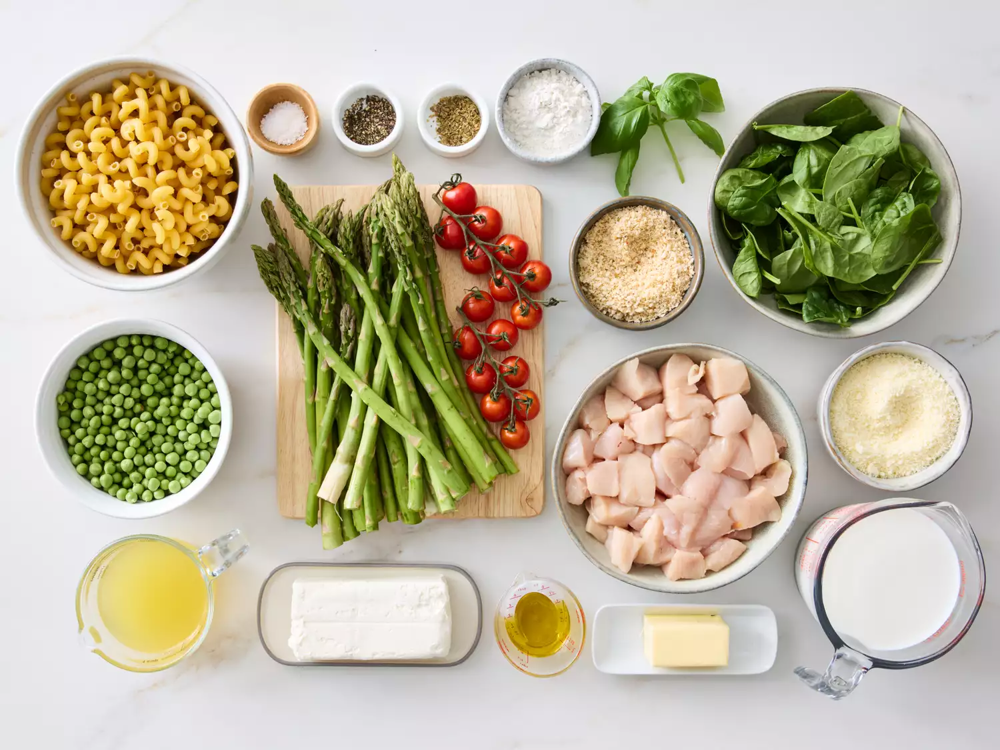
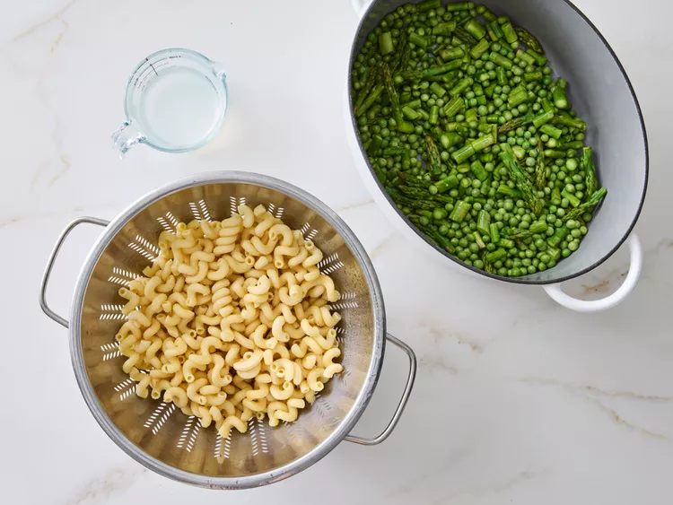
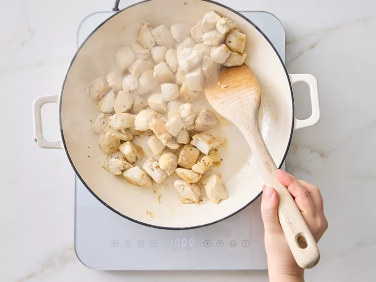
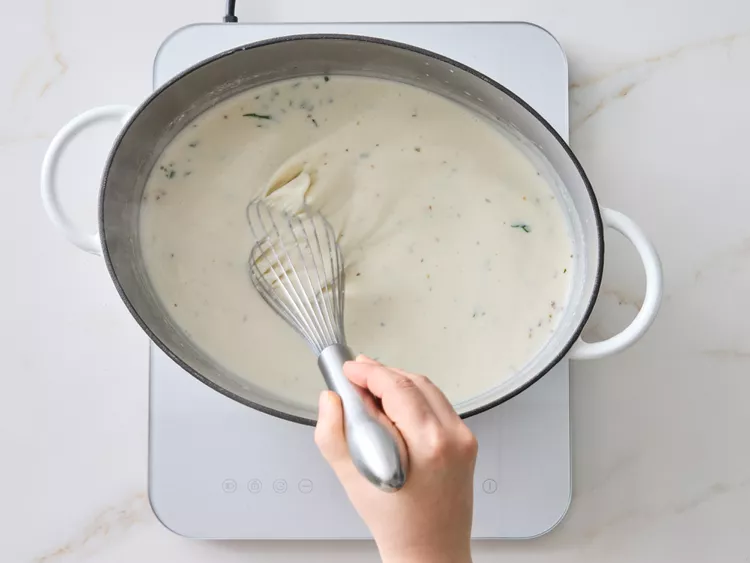
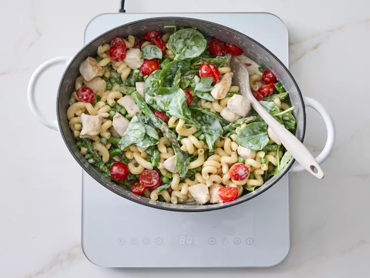
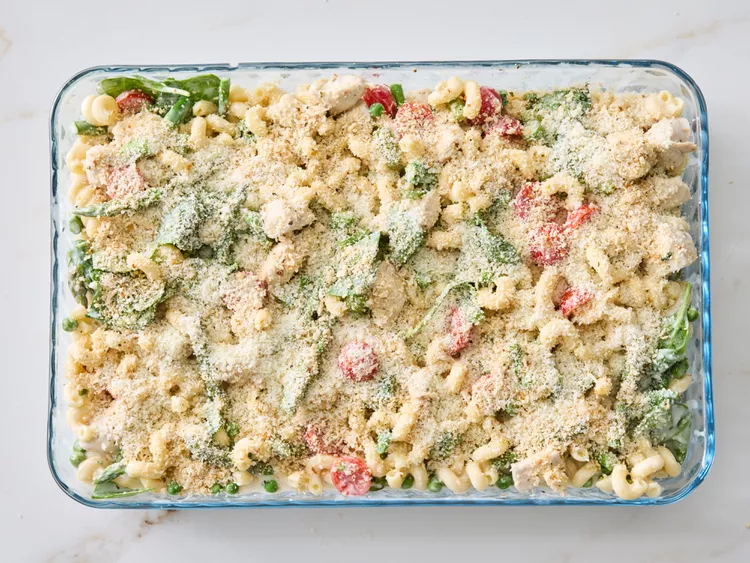
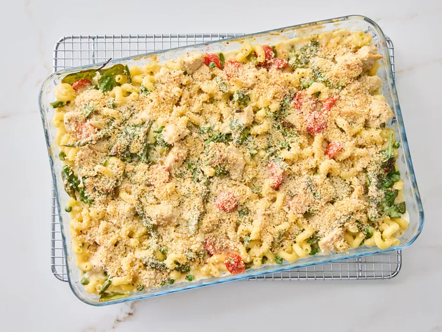

Pasta al horno con pollo Primavera

Descripción
Este gratinado de pasta primavera con pollo está repleto de guisantes frescos, espárragos y espinacas. Con pasta cavatappi en una cremosa salsa de queso, el gratinado se cubre con panko sazonado y parmesano, y se hornea hasta que esté burbujeante y dorado.
Ingredientes
- 12 onzas de pasta cavatappi seca
- 1 libra de espárragos, limpios y picados gruesamente.
- 2 cucharadas de aceite de oliva, divididas
- 1 1/2 libras de pechuga de pollo sin piel ni hueso cortada en trozos de 1 pulgada
- 1 cucharadita de sal, dividida
- 3/4 cucharadita de pimienta negra recién molida, dividida
- 1/4 taza de mantequilla
- 1/4 taza de harina de uso general
- 2 tazas de leche
- 1 paquete (8 onzas) de queso crema, ablandado
- 3/4 taza de caldo de pollo bajo en sodio
- 2 tazas de espinacas picadas gruesas
- 1 taza de tomates cherry, cortados por la mitad
- 1 taza de queso parmesano rallado, dividido
- 1 cucharada de albahaca fresca picada o 1 cucharadita de albahaca seca triturada
- 1 cucharada de orégano fresco picado, o 1 cucharadita de orégano seco triturado.
- 2/3 taza de pan rallado panko sazonado
Instrucciones
- Reúna todos los ingredientes. Precaliente el horno a 200 grados Celsius (400 grados Fahrenheit). Engrase una fuente rectangular para hornear de 3 cuartos de galón.

- Lleve a ebullición una olla grande de 4 a 6 cuartos de galón llena de agua con sal y cocine la pasta hasta que esté tierna pero firme, de 9 a 11 minutos. Agregue los guisantes y los espárragos durante los últimos 3 minutos de cocción. Escurra la pasta, reservando 2/3 de taza del agua de cocción. Deje la pasta en el colador; reserve la olla para usarla en la preparación de la salsa.

- Mientras tanto, calienta el aceite en una sartén de 30 cm a fuego medio-alto. Sazona el pollo con ½ cucharadita de sal y ½ cucharadita de pimienta negra. Agrega el pollo al aceite caliente. Cocina, revolviendo ocasionalmente, hasta que el pollo esté dorado y completamente cocido, de 5 a 7 minutos. Un termómetro de lectura instantánea insertado cerca del centro debe marcar al menos 74 °C (165 °F). Retira del fuego.

- Para la salsa, derrita la mantequilla en la olla. Incorpore la harina, la media cucharadita de sal restante y un cuarto de cucharadita de pimienta. Añada la leche, el queso crema y el caldo de pollo. Cocine a fuego medio, revolviendo constantemente, hasta que espese y burbujee. Cocine y revuelva durante un minuto más. Incorpore el agua de cocción de la pasta reservada, dos tercios de taza de queso parmesano, la albahaca y el orégano.

- Agrega la mezcla de pasta a la olla con la salsa; revuelve para que se impregne bien. Incorpora el pollo cocido, las espinacas y los tomates cherry.

- Vierta la mezcla en el molde para hornear preparado. Espolvoree con el 1/3 de taza restante de queso parmesano y pan rallado panko.

- Hornear en el horno precalentado hasta que la salsa burbujee y la cobertura esté dorada, de 15 a 20 minutos.
